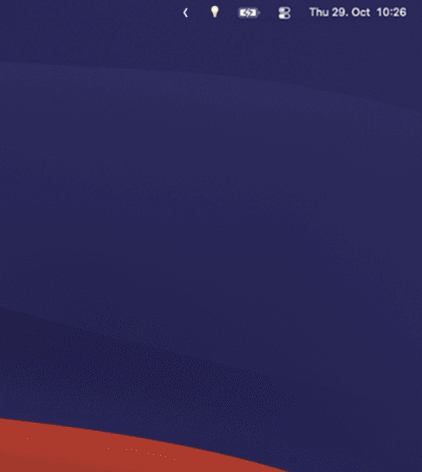

Light is off
Click to turn it on with your last-used preset.
Free & open source · macOS menu bar
Your Elgato Key Light, one click away. 🌑 turns the light on. 💡 opens the preset menu. No Dock icon, no companion windows, no dependencies.

A single icon in your menu bar that controls your Key Light — and from there, it manages itself. Turn it on when you sit down; KeylightBar handles the rest of your day.
Click to turn it on with your last-used preset.
Click to open the preset menu and pick a setup.
Turns your light off when the Mac sleeps — and, unlike anything else, switches it back on when you return to your desk.
Work preset until 19:00, Chill after — Time Of Day switches between your day and evening setups on schedule, all by itself.
Seven sensible presets ship with it — Meet, Work, Bright, Cold, Warm, Night, Chill — and a tiny editor for your own. No config files, no terminal.
Change the light from Elgato's app or its physical controls — the icon keeps up with the real state, not just its own.
It finds your light by itself; on stubborn networks it scans for it anyway. And it never pretends to control a light it can't reach.
One Swift file, zero dependencies, and it talks only to your light over your local network. Nothing leaves your house.
Works with every Elgato WiFi light — Key Light, Key Light Air, Key Light Mini, Ring Light, and Light Strip — on macOS.